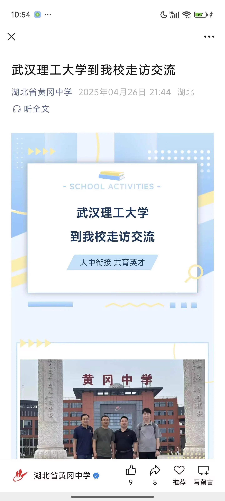
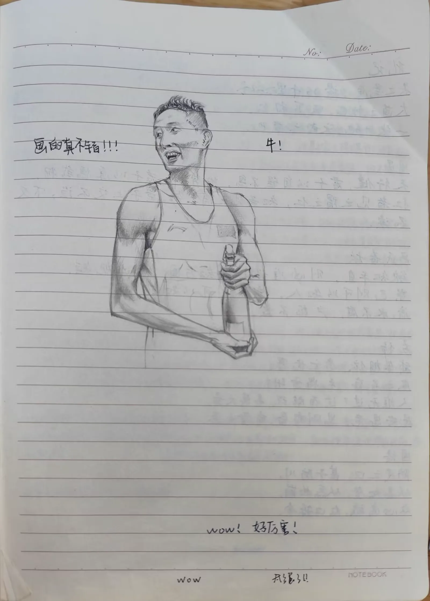
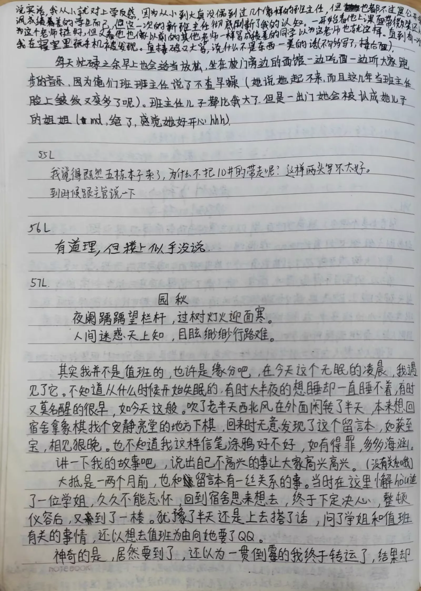
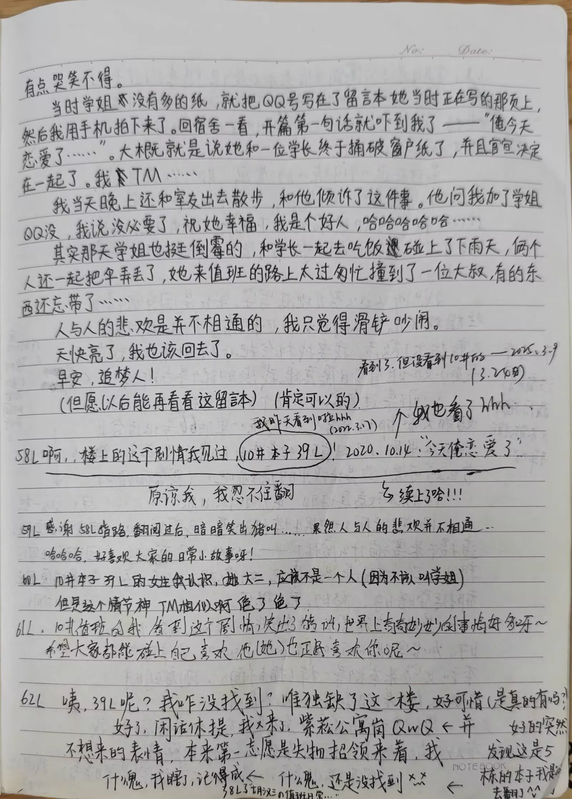
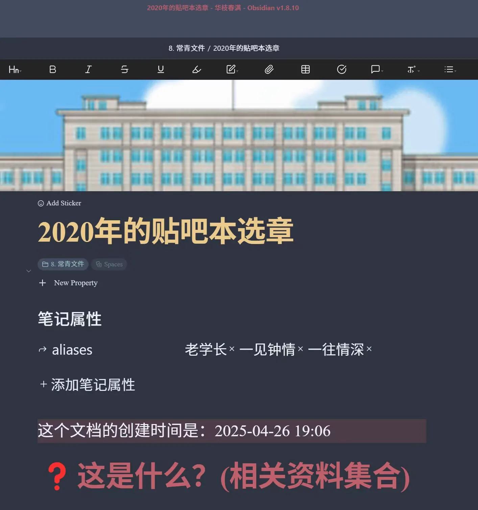
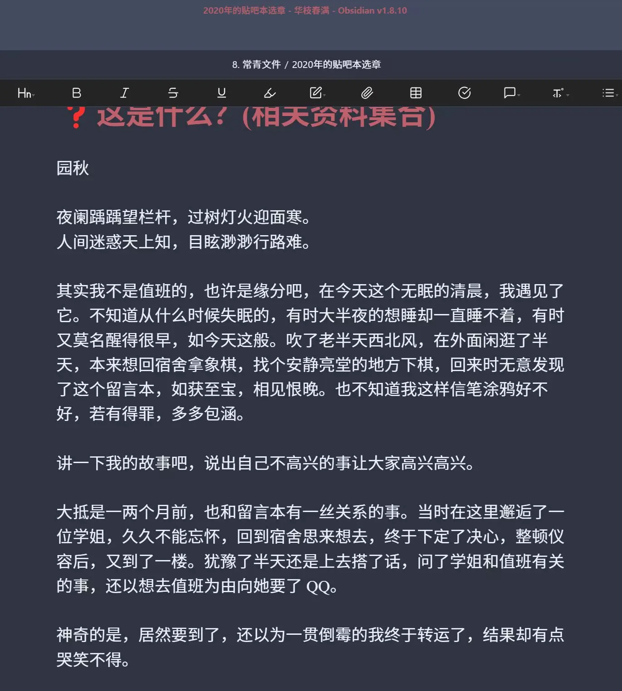
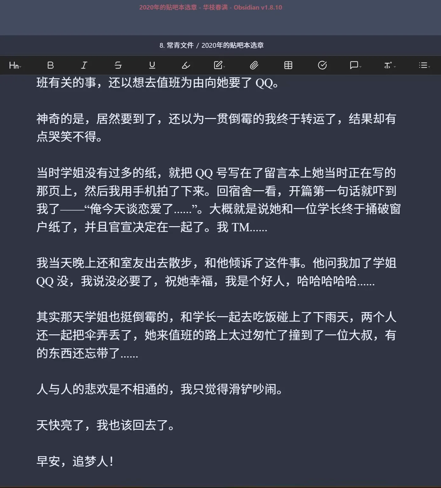

Journal · 2025-04-26
定位华中科技大学紫菘学生公寓8栋前台
“大抵是一两个月前，也和留言本有一丝关系的事。当时在这里邂逅了一位学姐，久久不能忘怀，回到宿舍思来想去，终于下定了决心，整顿仪容后，又到了一楼。犹豫了半天还是上去搭了话，问了学姐和值班有关的事，还以想去值班为由向她要了QQ。”
以上内容摘自2020年的协管员贴吧本，学长们还是一如既往的一往情深啊！
杨绛说过：“一见钟情不过是见色起意，日久生情不过是权衡利弊！”不知2020年的老学长作何感想？呵哈呵哈呵哈！
协管员的生活真是丰富多彩！我们在贴吧本中交流想法，交换见闻，分享各自的秘密，或者扯扯闲话，开开玩笑，聊聊梦想。这都无可厚非啦。
无论怎样，渴望交流本来就是人类最主要的天性之一。
时光轴记录
2025年4月26日 20:04
“大抵是一两个月前，也和留言本有一丝关系的事。当时在这里邂逅了一位学姐，久久不能忘怀，回到宿舍思来想去，终于下定了决心，整顿仪容后，又到了一楼。犹豫了半天还是上去搭了话，问了学姐和值班有关的事，还以想去值班为由向她要了 QQ。”
以上内容摘自 2020 年的协管员贴吧本，学长们还是一如既往的一往情深啊！
杨绛说过：“一见钟情不过是见色起意，日久生情不过是权衡利弊！”不知 2020 年的老学长作何感想？呵哈呵哈呵哈！
协管员的生活真是丰富多彩！
我们在贴吧本中交流想法，交换见闻，分享各自的秘密，或者扯扯闲话，开开玩笑，聊聊梦想。这都无可厚非啦。
无论怎样，渴望交流本来就是人类最主要的天性之一。
2025年4月26日 23:38
母校还是懂得“春秋笔法”的。
在国立大学系统中，跟黄州府中学堂最亲近的，恐怕只有国立武汉大学了。
谁拟的推文标题啊？无意冒犯，只是感觉好好笑







Apr 26, 2025 20:04
"It was probably a month or two ago, something that also had a little to do with the guestbook. Back then I happened to meet a senior sister here, and I couldn't get her out of my mind. Back in my dorm I thought it over and finally made up my mind. After straightening myself up, I went down to the first floor again. I hesitated for a long while before going up to talk to her, asking her about being on duty, and even asked for her QQ under the pretext of wanting to be on duty."
The above is excerpted from the 2020 hall-monitor Tieba notebook. The senior brothers are as devotedly affectionate as ever!
Yang Jiang once said: "Love at first sight is nothing but being smitten by looks, and love that grows with time is nothing but weighing pros and cons!" I wonder what the old senior brothers of 2020 would make of that? Ha ha ha ha!
The life of a hall monitor is truly rich and colorful!
In the Tieba notebook we exchange ideas, share what we've seen and heard, confide our secrets, or just chit-chat, crack jokes, and talk about our dreams. There's nothing wrong with any of that.
In any case, the desire to communicate is one of the most fundamental instincts of human beings.
Apr 26, 2025 23:38
Our alma mater still knows the "subtle strokes of the Spring and Autumn Annals."
In the national university system, the one closest to the Huangzhou Prefecture Middle School is probably only National Wuhan University.
Who came up with this tweet title? No offense, it just strikes me as really funny.
26 avr. 2025 20:04
« C'était il y a environ un mois ou deux, une chose qui avait aussi un petit rapport avec le livre d'or. À l'époque, j'y avais rencontré une camarade aînée, et je n'arrivais pas à me l'ôter de l'esprit. De retour au dortoir, j'ai longuement réfléchi et je me suis enfin décidé. Après m'être arrangé, je suis redescendu au rez-de-chaussée. Après avoir hésité un bon moment, je suis allé lui parler, lui posant des questions sur le service, et je lui ai même demandé son QQ sous prétexte de vouloir être de service. »
Le texte ci-dessus est extrait du carnet Tieba des surveillants de 2020. Les aînés sont toujours aussi passionnément attachés !
Yang Jiang a dit : « Le coup de foudre n'est que l'élan du regard, l'amour qui naît avec le temps n'est que pesée du pour et du contre ! » Que penseraient donc les vieux aînés de 2020 ? Ha ha ha ha !
La vie de surveillant est vraiment riche et haute en couleur !
Dans le carnet Tieba, nous échangeons des idées, partageons ce que nous avons vu et entendu, nous confions nos secrets, ou bien nous bavardons, plaisantons et parlons de nos rêves. Il n'y a rien de répréhensible à cela.
Quoi qu'il en soit, le désir de communiquer est l'un des instincts les plus fondamentaux de l'être humain.
26 avr. 2025 23:38
Notre alma mater maîtrise encore « l'art subtil des Annales des Printemps et Automnes ».
Dans le système des universités nationales, celle qui est la plus proche de l'École secondaire de la préfecture de Huangzhou n'est sans doute que l'Université nationale de Wuhan.
Qui a rédigé ce titre de publication ? Sans vouloir offenser, je le trouve juste très drôle.
26.04.2025 20:04
"Es war wohl vor ein oder zwei Monaten, eine Sache, die auch ein wenig mit dem Gästebuch zu tun hatte. Damals begegnete ich hier zufällig einer älteren Kommilitonin, und ich konnte sie nicht vergessen. Zurück im Wohnheim überlegte ich hin und her und fasste schließlich einen Entschluss. Nachdem ich mich zurechtgemacht hatte, ging ich wieder ins Erdgeschoss. Ich zögerte lange, bevor ich sie ansprach, fragte sie nach dem Dienst und bat sie sogar unter dem Vorwand, Dienst machen zu wollen, um ihre QQ-Nummer."
Der obige Text stammt aus dem Tieba-Heft der Aufseher von 2020. Die älteren Kommilitonen sind nach wie vor so leidenschaftlich verliebt wie eh und je!
Yang Jiang sagte einmal: "Liebe auf den ersten Blick ist nichts anderes als vom Äußeren hingerissen sein, und Liebe, die mit der Zeit wächst, ist nichts anderes als Abwägen von Vor- und Nachteilen!" Was mögen die alten Kommilitonen von 2020 wohl dazu gedacht haben? Hahaha!
Das Leben eines Aufsehers ist wahrlich bunt und abwechslungsreich!
Im Tieba-Heft tauschen wir Gedanken aus, teilen Erlebtes, vertrauen einander Geheimnisse an oder plaudern einfach, machen Witze und reden über unsere Träume. Daran ist nichts auszusetzen.
Wie dem auch sei, das Verlangen nach Austausch gehört zu den grundlegendsten Instinkten des Menschen.
26.04.2025 23:38
Unsere Alma Mater versteht noch immer die "subtile Schreibkunst der Frühlings- und Herbstannalen".
Im nationalen Universitätssystem steht der Mittelschule der Präfektur Huangzhou wohl nur die Nationale Universität Wuhan am nächsten.
Wer hat diesen Beitragstitel formuliert? Nichts für ungut, aber ich finde ihn einfach nur sehr lustig.